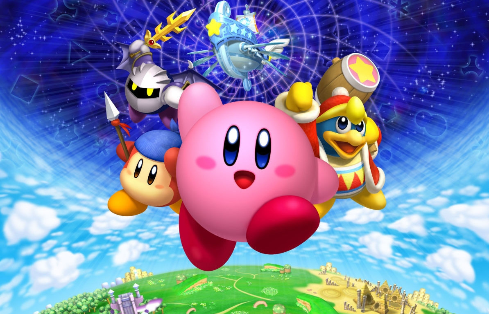
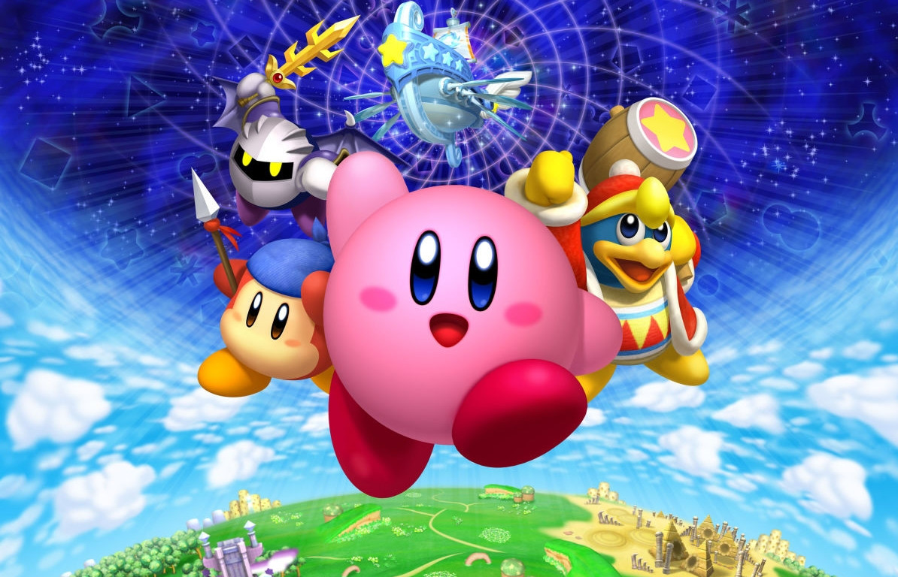

Kirby is an action platformer video game series developed by HAL Laboratory and published by Nintendo. This title features side scrolling levels with puzzles and fighting elements. Kirby is a cute, round, pink hero who has the ability to inhale objects as well as his opponents to spit them out as projectiles or eat them to potentially gain the powers or properties of that subject. The franchise is another popular name making it one of the top 50 best sellers in Nintendo.
Protagoinist
LKirby is a small, pink, spherical alien with red feet, stubby flap-like arms and pink cheek-blushes. He is referred to as male in the animated series, and described as a young boy in the instruction manual for Kirby's Dream Land. His body is soft and flexible, allowing him to stretch his mouth to inhale foes or inflate himself with air and float. According to Super Smash Bros. instruction manual, he is 8 inches tall; this is contradicted in Kirby's Dream Land 3 and Kirby 64: The Crystal Shards, the former of which shows Kirby to be at about knee height compared to Samus Aran and the latter of which showing him to be a few inches shorter than the human girl Adeleine.
Kirby hails from the country of Dream Land on Planet Popstar, where he lives in a domed house. His appearance has changed subtly over the years, becoming more rounded and defined, mainly in his face and larger eyes. The new design has been used in all subsequent games.
Kirby does not commonly speak, mainly limited to grunts, shouts, and monosyllables in such games as Super Smash Bros and Kirby 64: The Crystal Shards. However he does speak in the stories written in some games' instruction manuals. He rarely speaks in-game, the only exception being Kirby's Avalanche. He narrates the functions of Copy Abilities on the start menu in Kirby: Nightmare in Dream Land, Kirby & the Amazing Mirror and Kirby: Squeak Squad. Most in-game talking Kirby does is in Kirby's Star Stacker, where Kirby explains the game's rules and gameplay. Kirby has dialogue in Kirby's Epic Yarn, but it is all spoken through the game's narrator.
 
